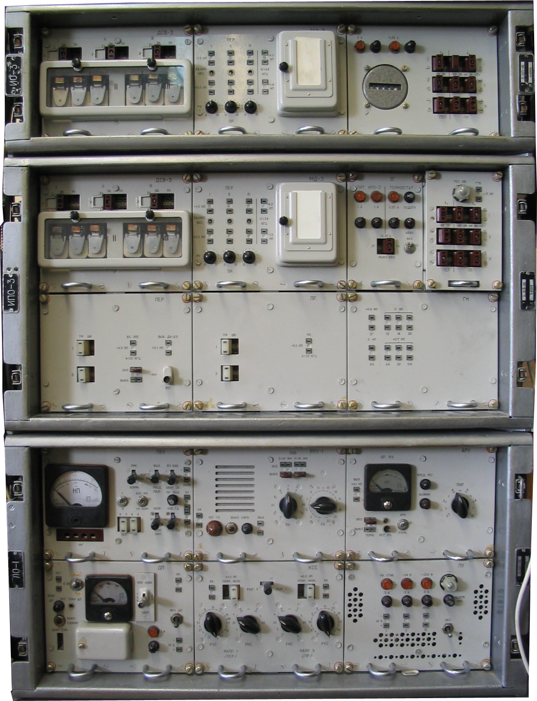
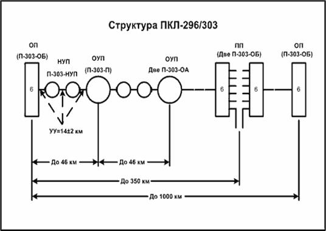
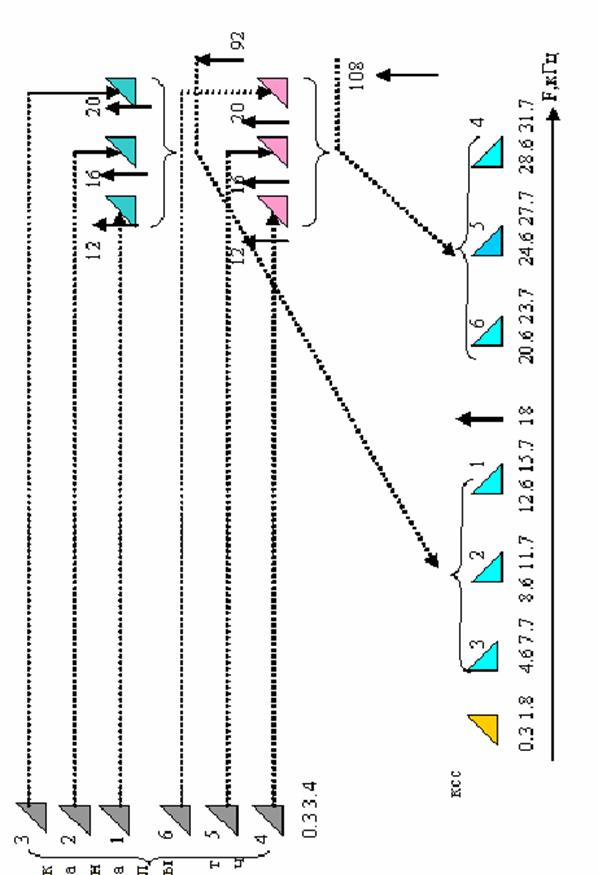

Тема №3. Устройство и эксплуатация систем передачи с частотным разделением каналов.
Занятие №2. Аппаратура каналообразования П-303-ОБ.
Учебные вопросы:
Литература:
1. Назначение, состав, тактико-технические данные, режимы работы аппаратуры П-303-ОБ.
Аппаратура П-303 предназначена для уплотнения кабеля дальней связи П-296, П-270, радиорелейных линий шестью телефонными каналами, а также выделения из каждого направления передачи кабельной магистрали до трех телефонных каналов. Сроки разработки с 1961 г. по 1966 г. Принята на вооружение в 1967 г. Годы серийного производства с 1967 г. Нормативный срок эксплуатации 10 лет.

Магистраль системы П-303 имеет в своем составе:
- каналообразующую аппаратуру оконечных станций П-303-ОБ(ОА);
- аппаратуру обслуживаемых усилительных пунктов (ОУП)-П-303-П;
- аппаратуру необслуживаемых усилительных пунктов (НУП) - П-303-НУП;
Структура ПКЛ.
| Характеристики | Значения | Значения |
|---|---|---|
| П-296 | П-270 | |
| Максимальная дальность сязи | до 1000 км | до 300 км |
| Количество НУП между ОУП | 2 | 0 |
| Длина усилительного участка | 12 - 16 км | до 40 км |
| Длина секции регулирования | до 46 км | |
| Переприемный участок | до 350 км | до 150 км |
Основные тактико-технические характеристики.
| Характеристики | Значения | Значения |
|---|---|---|
| П-296 | П-270 | |
| Тип линии | однокабельная четырехпроводная | однокабельная четырехпроводная |
| Тип уплотнения | частотный | частотный |
| Количество каналов ТЧ | 6 | 3 |
| Линейный спектр частот | 4,6 - 31,7 кГц | 4,6 - 17,7 кГц |
| Входное сопротивление линейных трактов | П-270 600 Ом П-296 135 Ом |
П-270 600 Ом П-296 135 Ом |
| Контрольные частоты | 18 кГц | 18 кГц |
| Эффективно передаваемая полоса частот КТЧ | 0,3-3,4 кГц | 0,3-3,4 кГц |
| Эффективно передаваемая полоса частот ШК-12 | 12,3-23,4 кГц | 12,3-23,4 кГц |
| Электропитание | ~220В 50Гц; =24В | ~220В 50Гц; =24В |
| Диапазон температур | -10 С до +50 С | -10 С до +50 С |
| Относительная влажность | 98% при t 0 до+35 С | 98% при t 0 до+35 С |
| Масса | 87 кг | 111 кг |
| Готовность к работе | через 30 мин. после вкл. | через 30 мин. после вкл. |

Магистраль разбивается на усилительные участки длиной 14 километров с допустимыми отклонениями плюс минус 2 км. На стыках усилительных участков оборудуются усилительные пункты, при этом между обслуживаемыми пунктами допускается установка не более двух необслуживаемых.
Участок магистрали между двумя обслуживаемыми пунктами (секция регулирования) не должен превышать 46 км.
Переприёмный участок расстояние между двумя оконечными станциями может состоять из восьми секций регулирования и иметь длину до 350 км. Дальнейшее увеличение дальности связи достигается соединением двух или трёх переприемных участков переприёмы по (НЧ).
Для выделения каналов на ОУП предусмотрена возможность установки вместо П-ЗОЗ-П двух оконечных станций П-ЗОЗ-ОА, работающих в режиме высокочастотного транзита по одной (любой) трёхканальной группе и низкочастотного транзита, либо выделения любых каналов ТЧ в другой трёхканальной группе.
Количество пунктов выделения на магистрали максимальной дальности не должно превышать восьми, при этом число низкочастотных транзитов для канала ТЧ не должно превышать двух. Максимальная дальность ПКЛ-296/303 до 1000 км
Аппаратура П-303 может применяться также для уплотнения кабеля дальней связи П-270, а также радиорелейных линий.
При работе по кабелю П-270 организуются только обслуживаемые усилительные пункты (ОУП) при длине усилительного участка до 40 км (Так как по кабелю П-270 нельзя осуществить дистанционное питание НУПов. В полумуфтах кабеля находятся катушки индуктивности).
Максимальная дальность связи составляет 300 км при двух переприёмных участках. При работе по радиорелейным линиям используется только каналообразующая аппаратура оконечных станций. Дальность связи определяется возможностями радиорелейной линии.
Режимы работы и электрические характеристики аппаратуры.
Аппаратура П-303 имеет следующие режимы работы:
- Оконечный радиорелейный или кабельный.
- Ретрансляция на РРЛ и ТРЛ по линейному спектру с использованием двух станций.
- Ретрансляция с РРЛ, ТРЛ и ПКЛ с помощью одной станции.
Система передачи П-303 является 4-х проводной однополосной системой.
- линейный спектр 4-32 кГц (б каналов) линейный спектр 4-16 кГц (3 канала);
- относительный уровень передачи по любому каналу ТЧ на линейном выходе 0 Нп (0 дБ) по мощности;
- линейный уровень приема на частоте 31,7 кГц равен -5,2-Нп (-45 дБ);
-
входное сопротивление со стороны линии:
- 150 Ом для кабеля П-296
- 600 Ом для кабеля П-270;
- спектр канала служебной связи в диапазоне 0,3?1,8 кГц;
- обслуживаемые станции имеют одночастотную систему автоматической регулировки усиления (совмещенную плоско-наклонную) на частоте 18 кГц;
- уровень тока КЧ на линейном выходе станции -1,73 Нп (-15 дБ) по мощности;
- пределы регулировки плоской характеристики + 0,53 Нп (+ 4,6 дБ);
- пределы регулировки наклонной характеристики + 0,15 Нп (1,3 дБ);
- скорость регулировки не более 0,1 Нп/мин;
- чувствительность не хуже 0,05 Нп;
- блокировка АРУ происходит резком увеличении уровня КЧ, более чем на 0,4 Нп или уменьшении на 0,5 Нп;
- на НУП применяется групповая АРУ.
Режимы работы каналов и их основные характеристики.
| Режимы работы каналов ТЧ аппаратуры П-303-ОБ | |||
|---|---|---|---|
| Режимы работы канала | Рпер.(Нп/дБ) | Рпр.(Нп/дБ) | ar, Нп/дБ |
| 2ПР ОК | 0 | -0,8/7 | -0,8/7 |
| 2ПР ТР | -0,4/3,5 | -0,4/3,5 | 0 |
| 4ПР ОК | -1,5/13 | +0,5/4,3 | -2,0/17,3 |
Назначение режимов каналов ТЧ:
- 4 ПР ОК для использования в сетях многоканального тонального телеграфа, закрытой телефонной связи, передачи данных и т. п., а также для транзитных соединений при значительных длинах соединительных линий;
- 2 ПР ОК для открытой телефонной связи при отсутствии на телефонном коммутаторе транзитных удлинителей
- 2 ПР. ТР для временных транзитных соединений открытых телефонных каналов, а также для оконечной связи при наличии на телефонном коммутаторе транзитных удлинителей.
- ШК-12 предназначен для ВЧ транзитов, передачи данных с повышенными скоростями и других широкополосных сигналов в полосе частот 12-24 кГц.
-
КСС
для ведение служебных переговоров с полосой частот 0,3-1,8 кГц.
- эффективно передаваемая полоса частот (ЭППЧ)каналов ТЧ 0,3-3,4кГц;
- эффективно передаваемая полоса частот (ЭППЧ) канала ШК-12 12-24 кГц;
- эффективно передаваемая полоса частот (ЭППЧ) КСС 0,3-1,8 кГц;
- вызов по каналам ТЧ осуществляется на частоте 2100 Гц и уровнем на 0,7 Нп (6,1дБ) ниже номинального уровня передачи;
- вызов по каналу служебной связи осуществляется голосом;
- входное и выходное сопротивление каналов 600 Ом.
Электропитание аппаратуры и потребляемая мощность
Электропитание обслуживаемых станций может осуществляться в двух вариантах:
-
от источника переменного тока 220 В 50 Гц
- Рпотр=75 ВА (3-х канальная),
- Рпотр=90 ВА (6-ти канальная),
- Рпотр=65 ВА (для П-303-П).
-
от источника постоянного тока 24 В
- Рпотр=43 Вт (3-х канальная),
- Рпотр=44,5 ВТ(6-ти канальная),
- Рпотр=36 ВТ (для П-303-П).
Питание НУП обеспечивается дистанционно от ближней станции постоянным током 39 мА (напряжение ДП около 80 В.) или от местного источника с напряжением 24 В и током 110 мА.
2. Схема частотных преобразований аппаратуры П-303-ОБ.
Для каналообразующего оборудования всех систем комплекса "Топаз" в качестве унифицированной основы принята 3-х канальная группа в диапазоне 12-24 кГц. В соответствии с этим индивидуальное оборудование каналов аппаратуры П-303 полностью унифицировано с индивидуальным оборудованием 12-ти канальной группы.
Принцип образования линейного спектра аппаратуры П-303-ОБ изображен на рисунке 2.1.
Трехканальная группа в диапазоне частот 12,3-23,4 кГц образуется путем индивидуального преобразования тонального спектра 0,3-3,4 кГц каждого канала с помощью несущих частот 12, 16 и 20 кГц с использованием верхней боковой полосы. Это ступень индивидуального преобразования.
В групповом преобразовании две ступени преобразования. Диапазон промежуточного преобразования совпадает с диапазоном основной 12-ти канальной группы (60-108 кГц) с таким же расположением частотных полос каналов.
Диапазон частот первой трехканальной группы 12,3-23,4 кГц после преобразования на несущей 92 кГц переносится в спектр 68,6-79,7 кГц, вторая 3-х канальная группа на несущей 108 кГц переносится в спектр 84,6-95,7 кГц. Окончательно линейный спектр формируется путем переноса спектра двух 3-х канальных групп 68,6-95,7 кГц на несущей 64 кГц в линейный спектр 4,6-31,7 кГц. После введения в линейный спектр сигналов КСС в полосе 0,3-1,8 кГц и линейной контрольной частоты ЛКЧ 18 кГц получается групповой спектр (линейный сигнал) П-303-ОБ 0,3-31,7 кГц

3. Функциональная схема аппаратуры П-303-ОБ.
Функциональная схема аппаратуры содержит передающий и приемный тракты.
Индивидуальная часть тракта передачи включает в себя индивидуальные преобразователи, обеспечивающие преобразование тонального спектра частот в диапазон 3-х канальной группы 12,3-23,4 кГц, и канальные полосовые фильтры ПФ 12-16, ПФ 16-20, ПФ 20-24, подавляющие неиспользуемую нижнюю боковую полосу частот. Измерительный уровень на входе индивидуальной части тракта передачи принят равным 1,5 Нп (-13 дБ). На выходе канальные фильтры включены непосредственно параллельно друг другу. Уровень в точке образования 3-х канальной группы - 4.0 Нп. Далее спектр трехканальных групп поступает в групповую часть преобразования тракта передачи: на групповой преобразователь ГП-1 первая группа, на ГП-2 - вторая группа, соответственно на несущих 92 и 108 кГц.После ГП-1 полосовым фильтром ПФ 68-80 выделяется нижняя боковая полоса частот в спектре 68,6-79,7 кГц, а после ГП-2 фильтром ПФ 84-96 полоса 84,6-95,7 кГц. Объединение этих двух групп в одну с полосой 68,6-95,7 происходит в дифференциальной системе ДС. Далее групповой сигнал поступает на усилитель УС 60-108. Уровень на его входе после ДС равен 5,4 Нп (-46,9 дБ). Поскольку дальнейшее снижение уровня может привести к увеличению собственных шумов аппаратуры, установлен УС 60-108, обеспечивающий усиление группового сигнала до 3,5 Нп (-30,4 дБ). Затем спектр группового сигнала поступает на Гп-2, где на несущей частоте 64 кГц происходит формирование линейного спектра аппаратуры 4,6-31,7 кГц. Здесь же с помощью неравноплечей дифсистемы ДСК производится ввод ЛКЧ-18 кГц. На выходе ГП-2 установлен фильтр Д-32, подавляющий неиспользуемые продукты второго группового преобразования. Необходимый уровень передачи на выходе линейного тракта О Нп (0 дБ) обеспечивается линейным усилителем ЛУС. На выходе усилителя включается фильтр ДК-2.0, разделяющий полосы линейного спектра аппаратуры уплотнения 4,6-31,7 Кгц и канала служебной связи 0,3-1,8 кГц.Между фильтром и линейным выходом аппаратуры включается переходной трансформатор ЛТ для образования средних точек и организации дистанционного питания с помощью блока ДП. Этот же трансформатор используется для обеспечения согласования выходного сопротивления аппаратуры с входным сопротивлением линии связи - 150 Ом для работы по кабелю П-296 и 600 Ом по кабелю П-270.
Приемный тракт включает в себя линейную часть, групповую и индивидуальную части.
Линейная часть приемного тракта содержит узлы для компенсации затухания усилительного участка длиной от 0 до 16 км. В линейной части приемного тракта предусмотрена автоматическая регулировка усиления, обеспечивающая компенсацию колебания затухания участка линии длиной около 42 км при изменении температуры в пределах одного сезона. Уровень на входе обслуживаемой станции на верхней частоте используемого диапазона при температуре +50 С составляет минус 4,5 Нп (-38,2 дБ). Уровень на выходе линейной части тракта приема равен 0,1 Нп (0,9 дБ), что обеспечивает использование линейного тракта приема оконечной станции для сопряжения кабельной линии с передатчиком РРЛ, на выходе которого требуется уровень порядка 0 Нп (0 дБ). На входе приемного тракта установлен ЛТ, выполняющий те же функции, что и ЛТ в передающей части. Фильтр ДК-2.0 делит спектры аппаратуры уплотнения и КСС. Сигналы линейного спектра через К-2.0 поступают на ручной регулятор усиления РУ-1 с пределами регулировки 0-3,8 Нп (0-33 дБ), обеспечивающий установочную регулировку аппаратуры в зависимости от длины линии и сезона. Фильтр Д-32 «крыша» ограничивает сверху полосу частот, поступающую на вход линейного тракта. Компенсация наклона частотной характеристики затухания кабельной цепи осуществляется с помощью ручного регулятора наклона РН и двух выключаемых постоянных линейных выравнивателей ПЛВ, компенсирующих наклон участка линии от 2 до 16 км при температуре +10 С. После ПЛВ установлен вспомогательный усилитель ВУС, предотвращающий чрезмерное снижение уровня в приемном тракте. На выходе ВУС установлен дополнительный регулятор усиления РУ-2 0-0,7 Нп (0-6,1 дБ), позволяющий увеличивать усиление приёмного тракта при длине усилительного участка более 14 км, а также при увеличенной длине секций регулирования до 46 км. Для удобства эксплуатации оба регулятора усиления совмещены на одном переключателе, обеспечивающем уменьшение затухания РУ-2 только после полного выключения РУ-1. Ручной регулятор наклона, установленный после РУ-2, позволяет получить «веер» частотных характеристик, эквивалентных наклону характеристики затухания участка линии длинной от 0 до 4 км и компенсирующих наклон частотной характеристики затухания участка линии в этих пределах на +0,37 Нп (+3,2 дБ). Таким образом, во взаимодействии с ПЛВ РН позволяет полностью компенсировать наклон ЧХ кабельной линии длиной от 0 до 16 км. Линейный усилитель приёма ЛУС предназначен для усиления линейного сигнала до величины, обеспечивающей нормальную работу следующей ступени преобразования. В цепь ООС ЛУС включен плоско-наклонный регулятор усиления, работой которого управляет схема автоматической регулировки усиления АРУ, обеспечивающая компенсацию изменения величины и наклона частотной характеристики затухания участка регулирования в зависимости от температуры и поддержание уровня на выходе ЛУС в пределах +0,1 Нп (+0,1). На входе группового преобразования приёмного тракта включён режекторный фильтр РФ-18, предотвращающий проникновение ЛКЧ-18 кГц в дальнейшие ступени преобразования. Оборудование группового преобразования приёмного тракта построено аналогично преобразовательному оборудованию группового тракта передачи. Групповой преобразователь ГП-2 осуществляет преобразование линейного спектра частот в диапазон 68-96 кГц. Между двумя ступенями группового преобразования включен УС 60-108 с усилением 1,4 Нп (12,2 дБ), предотвращающий опасность увеличения собственных шумов аппаратуры из-за чрезмерного снижения уровня. Полосовые фильтры ПФ 68-80 и ПФ 84-96 выделяют из спектра 68-96 кГц соответственно 1-ю и 2-ю трехканальные группы. Предгрупповое преобразование в спектр 12-24 кГц обеспечивается ГП-1 на несущих 92 и 108 кГц. Выделение полезных продуктов этого преобразования осуществляется полосовым фильтром ПФ 12-24, а усиление до необходимой величины - УС 12-24. Индивидуальная часть тракта приема каждого канала включает в себя канальный фильтр, выделяющий полосу одного канала; индивидуальный преобразователь (демодулятор), обеспечивающий преобразование поступивших на его вход сигналов в тональный диапазон; фильтр нижних частот, подавляющий токи не нужных продуктов преобразования и токи несущих частот; усилитель низкой частоты с регулятором усиления, обеспечивающий требуемый уровень приема +0,5 Нп (+4,3 дБ) и его плавную регулировку в пределах +0,5 Нп (+4,3 дБ). В цепи обратной связи усилителя НЧ предусмотрена возможность корректирования частотной характеристики остаточного затухания на краях и в средней части рабочего диапазона частот. В аппаратуре предусмотрена возможность образования как четырех-проводного выхода канала с уровнями -1,5 Нп (-13,0 дБ) на передаче и +0,5 Нп (+4,3 дБ) на приеме, так и 2-х проводного выхода канала. В последнем случае обеспечивается переключение из режима транзита 0,4 Нп (-3,5 дБ) на входе и выходе канала в оконечный режим 0 Нп на 2-х проводном входе и минус 0,8 Нп (-7,0 дБ) на 2-х проводном выходе канала. Переход с 4-х проводного на 2-ое окончание осуществляется с помощью дифсистемы. В передающей ветви дифсистемы включен ограничитель амплитуд телефонных сигналов. В состав устройств для перехода на 2-х проводную работу входят также узлы, обеспечивающие прием индукторного вызова со стороны коммутатора (ПНВ), преобразование его в тональный вызов путем подключения к передающей ветви дифсистемы генератора тонального вызова (ГТВ). Преобразование тонального вызова, поступающего с линейной стороны, в индукторный вызов, посылаемый в сторону коммутатора, осуществляется приемником тонального вызова, включенным в приемной ветви дифсистемы - срабатывание приемника обеспечивает подключение к коммутаторным проводам генератора индукторного вызова. Подключение ПТВ осуществляется с помощью неравноплечей дифсистемы ДСПТВ, которая защищает приемник ПТВ от мешающего воздействия токов, приходящих от коммутатора. Коммутация режимов работы канала по низкой частоте осуществляется на специальном щитке, встроенном в аппаратуру, а переход от режима 2 пр ОК к режиму 2 пр.ТР осуществляется на блоке дифсистемы. В аппаратуре предусмотрена возможность организации «широких» каналов с полосой частот порядка 12 кГц взамен трех телефонных КТЧ, что обеспечивается путем отключения индивидуального оборудования 3-х канальной группы от первого группового преобразователя с подключением к нему на передаче и приеме «широкого» канала с ЭППЧ 12,3-23,4 кГц через полосовой фильтр ПВ 12-24 с целью ограничения его полосы. Вместо 2-й трех канальной группы на вход развязывающей дифсистемы можно подать сигналы от аппаратуры вещания АВО-2,АВ-2/3 и др., работающей в диапазоне 84-96 кГц.
Оборудование канала служебной связи.
В состав аппаратуры П-303 входят устройства, обеспечивающие организацию служебного канала для связи между собой механиков станций оконечных и усилительных пунктов. Служебный канал организуется по четырехпроводной схеме в спектре частот 0,3-1,8 кГц. Разделение частотных спектров КСС и АУ осуществляется фильтрами ДК-2,0. Оборудование служебной связи обеспечивает возможность громкоговорящего приема вызова с любого пункта кабельной магистрали на одном переприёмном участке и возможность переговоров с любым пунктом. Компенсация затухания кабеля в диапазоне частот 0,3-1,8 кГц обеспечивается на оконечных и обслуживаемых усилительных станциях с помощью специальных усилителей низкой частоты, регуляторов усиления и наклона КСС. Тракт передачи КСС каждого усилительного направления имеет ступенчатый регулятор усиления, регулятор наклона и усилитель, обеспечивающий повышение уровня до +0,5 Нп. 4-х проводное окончание КСС имеет уровни на передачу -1,5 Нп, на прием +0,5 Нп. Номинальный уровень на линейном выходе по КСС равен 0 Нп. Уровень приема для КСС меняется в пределах от 2,0 Нп (-17,4 дБ) при работе по кабелю до -2,6 Нп (-22,6 дБ) при работе по РРЛ. Для регулировки усиления в тракте приема установлены РНС и РУС. Регуляторы усиления обоих направлений аналогичны друг другу. Регуляторы наклона РНС предназначены для компенсации наклона частотной характеристики кабеля в спектре частот КСС. Точка вращения частотных характеристик находится на частоте 0,8 кГц. В 4-ом положении регулятор имеет плоскую характеристику, это положение используют для работы по РРЛ. Для контроля исправности служебного канала предусмотрена постоянная передача с оконечных станций по служебному каналу контрольного сигнала от сигнального генератора типа «Кукушка». В одном направлении они имеют частоту 700 Гц, в другом 1300 Гц.
Электропитание и сигнализация
Питание обслуживаемых станций аппаратуры П-303 осуществляется от источника переменного тока напряжением 220 В при колебаниях напряжения в пределах от плюс 10 до минус 20% или от резервного источника постоянного тока напряжением 24 В + 10% с шумами не более 0,25 В в полосе частот до 300 Гц и 15 мВ в полосе выше 300 Гц. Переход на питание аппаратуры от резервного источника осуществляется автоматически при пропадании напряжения источника переменного тока или снижении его до величины 150-160 В.
В аппаратуре (на оконечных и обслуживаемых усилительных станция) имеется питающее устройство, содержащее силовой трансформатор с выпрямителем для питания от сети переменного тока и транзисторный стабилизатор постоянного тока, обеспечивающий стабилизацию напряжения питания всех цепей аппаратуры (за исключением цепей питания блоков КСС,ПВУ,ДП и счетчика часов работы аппаратуры) как при питании от источников постоянного тока, так и при питании от сети переменного тока. Стабилизатор напряжения имеет три различных выхода, каждый из которых обеспечивает на нагрузке напряжение 19 В + 2% и ток около 400 мА.
Питание блоков, содержащих оборудование канала служебной связи (КСС и ПВУ), а также блока ДП осуществляется от отдельного стабилизатора, размещенного в блоке ДП. Питающее устройство размещено в упаковке ЛО-1. Питание блоков АРУ, РРУ-1 этой упаковки осуществляется непосредственно с блока ПУ с выхода III стабилизатора. С этого же выхода осуществляется питание упаковки ИО-3 через соединительные колодки СК-1 упаковки ЛО-1,СК-II и СК-I упаковки ИПО-3,СК-I упаковки ИО-3. Для защиты источников питания от коротких замыканий в аппаратуре на входе питающего устройства установлены предохранители в цепи переменного тока и в цепи резервного источника постоянного тока. С целью защиты входных цепей стабилизатора на его входе также установлен предохранитель. Защита стабилизатора от перегрузок по току или коротких замыканий осуществляется с помощью специальной схемы, обеспечивающей автоматическое отключение стабилизатора от источников питания. Параллельно предохранителям включены сигнальные лампочки, которые загораются при перегорании предохранителей. Такая сигнализация предусматривается для всех предохранителей, кроме общего предохранителя в цепи переменного тока, размещенного в блоке ПУ. Его неисправность будет отмечаться погасанием неоновой лампочки, сигнализирующей наличие напряжения переменного тока.
Помимо сигнализации перегорания предохранителей в аппаратуре предусматривается оптическая сигнализация:
- пропадания контрольной частоты и достижения пределов регулировки в системе АРУ (в блоке АРУ);
- аварии дистанционного питания (резкое увеличение или уменьшение тока дистанционного питания вследствие обрыва или короткого замыкания) в блоке ДП;
- наличия переменного напряжения и переключения на резервное питание (в блоке ПУ);
- посылки индукторного вызова. Эта сигнализация осуществляется с помощью неоновой лампочки, подключенной к обмотке трансформатора генератора индукторного вызова и загорающейся при запуске ГИВ. Эта лампочка размещена на коммутационном щитке упаковки ИПО-3 и обозначена гравировкой ПОС.ИВ.
Помимо оптической сигнализации в аппаратуре предусмотрена акустическая аварийная сигнализация при пропадании контрольной частоты и аварии дистанционного питания. Акустическая сигнализация осуществляется с помощью специального генератора АС, который при возникновении аварии получает нужный управляющий сигнал («землю») и начинает генерировать колебания с частотой порядка 900 Гц. Эти колебания, усиленные усилителем громкоговорителя, поступают на динамик. Имеется возможность выключения акустической сигнализации с помощью кнопки ВЫКЛ.СИГН. При этом срабатывает реле и загорается сигнальная лампочка, которая горит до устранения аварии. Реле, кнопка и лампочка размещены в блоке РРУ-1.Станция имеет выход к общестанционной сигнализации ЛАЗ (ЛАЦ) с клеммы а СКII упаковки ЛО-I.